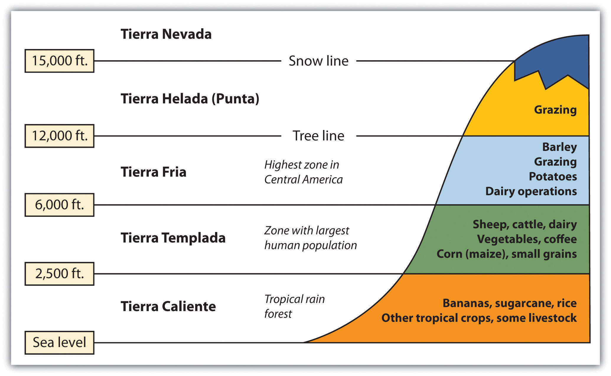
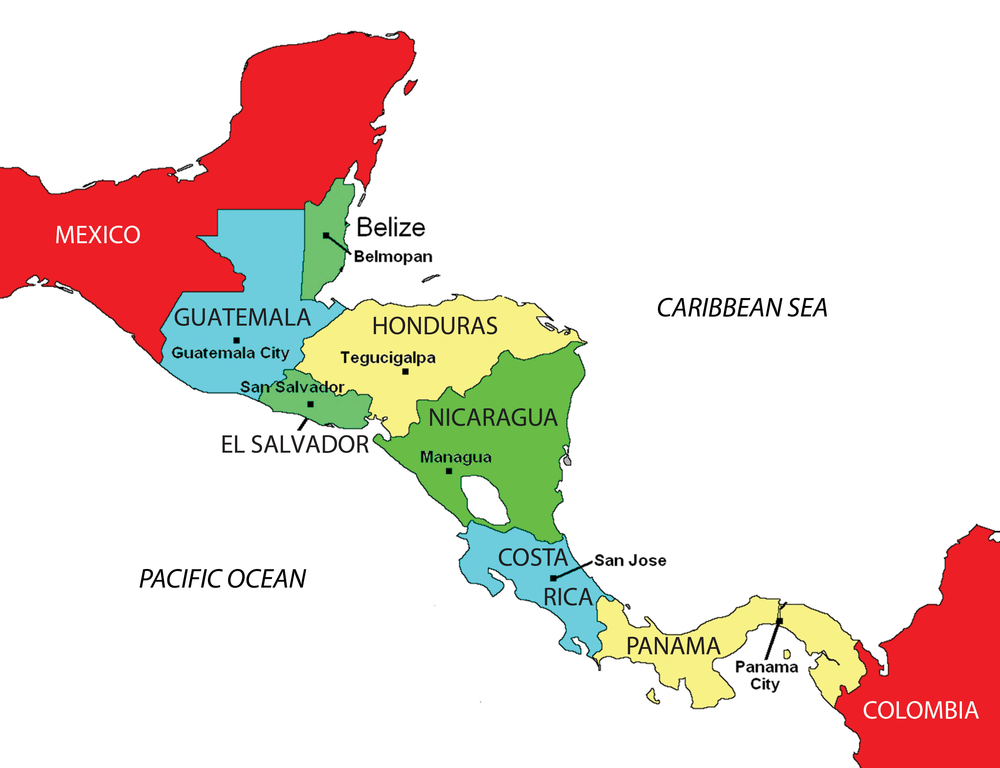
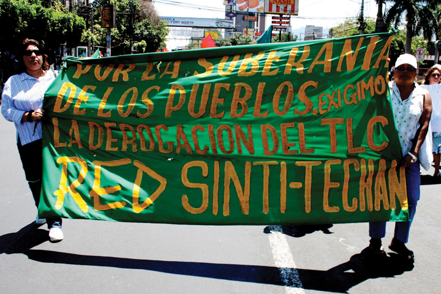
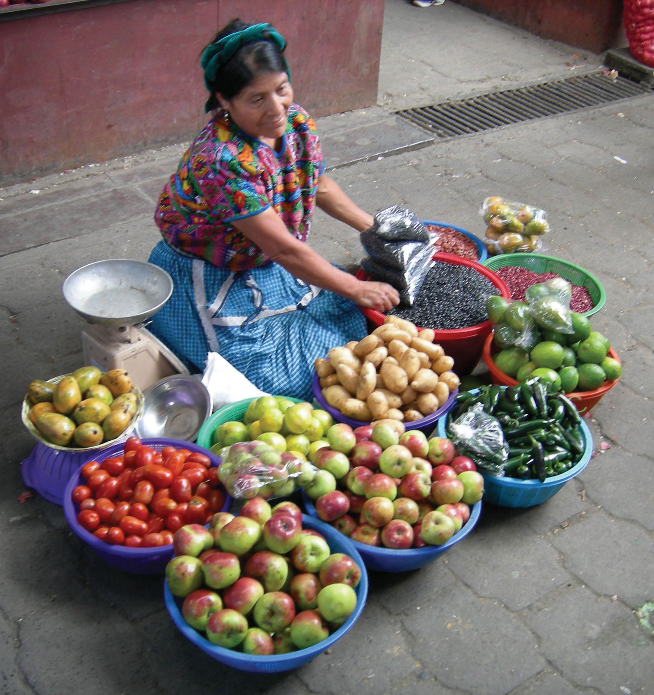
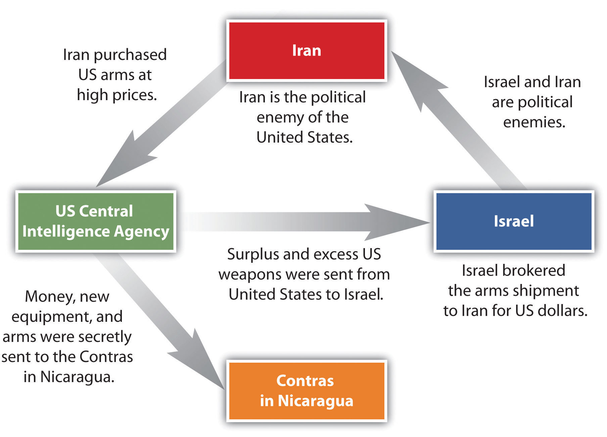
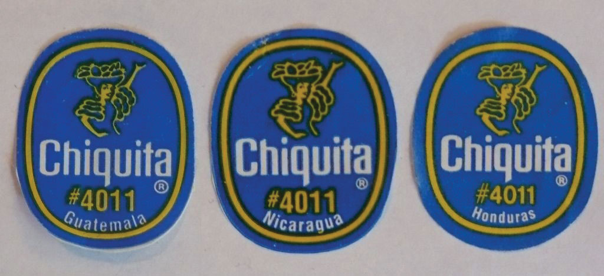
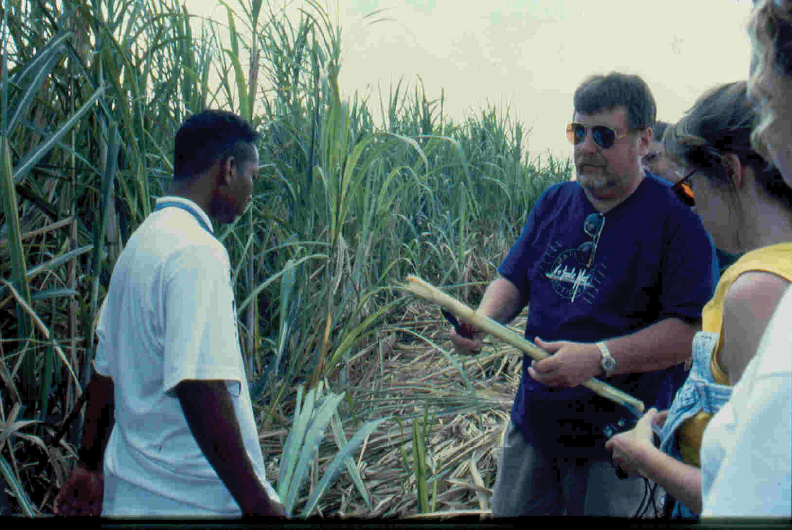
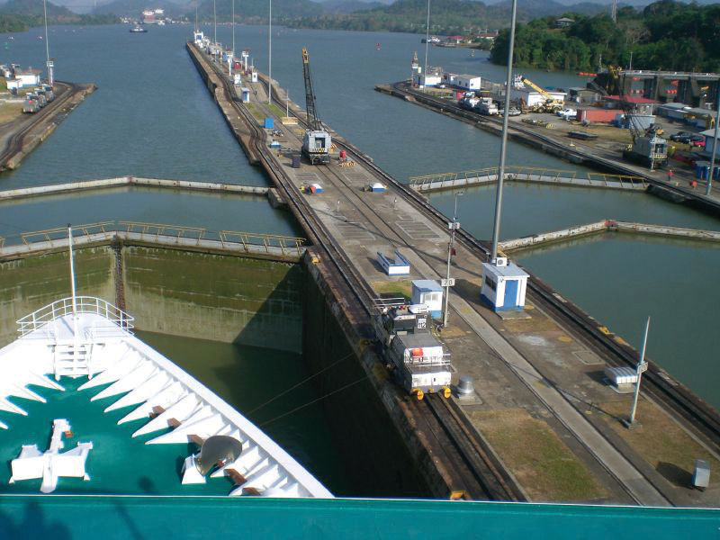

Central America is a land bridge connecting the North and South American continents, with the Pacific Ocean to its west and the Caribbean Sea to its east. A central mountain chain dominates the interior from Mexico to Panama. The coastal plains of Central America have tropical and humid type A climates. In the highland interior, the climate changes with elevation. As one travels up the mountainsides, the temperature cools. Only Belize is located away from this interior mountain chain. Its rich soils and cooler climate have attracted more people to live in the mountainous regions than along the coast.
Hurricanes, tropical storms, earthquakes, and volcanic activity produce recurring environmental problems for Central America. In 1998, Hurricane Mitch swept through the region, devastating Nicaragua and El Salvador, which had already been devastated by civil wars in previous years.
The volcanic activity along the central mountain chain over time has provided rich volcanic soils in the mountain region, which has attracted people to work the land for agriculture. Central America has traditionally been a rural peripheral economic area in which most of the people have worked the land. Family size has been larger than average, and rural-to-urban shift dominates the migration patterns as the region urbanizes and industrializes. Natural disasters, poverty, large families, and a lack of economic opportunities have made life difficult in much of Central America.
High mountains ranges run the length of Central and South America. The Andes Mountains of South America are the longest mountain chain in the world, and a large section of this mountain range is in the tropics. Tropical regions usually have humid type A climates. What is significant in Latin America is that while the climate at the base of the Andes may be type A, the different zones of climate and corresponding human activity vary as one moves up the mountain in elevation. Mountains have different climates at the base than at the summit. Type H highland climates describe mountainous areas that exhibit different climate types at varying degrees of elevation.
Human activity varies with elevation, and the activities can be categorized into zones according to altitudinal zonationVertical environmental zones that change with altitude in mountainous regions.. Each zone has its own type of vegetation and agricultural activity suited to the climate found at that elevation. For every thousand-foot increase in elevation, temperature drops 3.5 ºF. In the tropical areas of Latin America, there are five established temperature-altitude zones. Elevation zones may vary depending on a particular location’s distance from the equator.
Figure 5.17 Altitudinal Zonation System in Latin America
From sea level to 2,500 feet are the humid tropical lowlands found on the coastal plains. The coastal plains on the west coast of Middle America are quite narrow, but they are wider along the Caribbean coast. Vegetation includes tropical rain forests and tropical commercial plantations. Food crops include bananas, manioc, sweet potatoes, yams, corn, beans, and rice. Livestock are raised at this level, and sugarcane is an important cash crop. Tropical diseases are most common, and large human populations are not commonly attracted to this zone.
From 2,500 to 6,000 feet is a zone with cooler temperatures than at sea level. This is the most populated zone of Latin America. Four of the seven capitals of the Central American republics are found in this zone. Just as temperate climates attract human activity, this zone provides a pleasant environment for habitation. The best coffee is grown at these elevations, and most other food crops can be grown here, including wheat and small grains.
From 6,000 to 12,000 feet is the highest zone found in Middle America. This zone is usually the limit of the tree line; few trees grow north of this zone. The shorter growing season and cooler temperatures found at these elevations are still adequate for growing agricultural crops of wheat, barley, potatoes, or corn. Livestock can graze and be raised on the grasslands. The Inca Empire of the Andes Mountains in South America flourished in this zone.
Some classify this as the “Puna” zone. At this elevation, there are no trees. The only human activity is the raising of livestock such as sheep or llama on any short grasses available in the highland meadows. Snow and cold dominate the zone. Central America does not have a tierra helada zone, but it is found in the higher Andes Mountain Ranges of South America.
There is little human activity above 15,000 feet. Permanent snow and ice is found here, and little vegetation is available. Many classification systems combine this zone with the tierra helada zone.
Amerindian groups dominated Central America before the European colonial powers arrived. The Maya are still prominent in the north and make up about half the population of Guatemala. Other Amerindian groups are encountered farther south, and many still speak their indigenous languages and hold to traditional cultural customs. People of European stock or upper-class mestizos now control political and economic power in Central America. Indigenous Amerindian groups find themselves on the lower rung of the socioeconomic ladder.
Figure 5.18 Central American Republics
During colonial times, the Spanish conquistadors dominated Central America with the exception of the area of Belize, which was a British colony called British Honduras until 1981. Guatemala, El Salvador, Honduras, Nicaragua, and Costa Rica were Spanish colonies and became independent of Spain in the 1820s. Panama was a part of Colombia and was not independent until the United States prompted an independence movement in 1903 to develop the Panama Canal. As is usually the case with colonialism, the main religion and the lingua franca of the Central American states are those of the European colonizers, in this case Roman Catholicism and Spanish. In some locations, the language and religion take on variant forms that mix the traditional with the European to create a unique local cultural environment.
About 50 percent of the people of Central America live in rural areas, and because the economy is agriculturally based, family size has traditionally been large. Until the 1990s, family size averaged as high as six children. As the pressures of the postindustrial age have influenced Central America, average family size has been decreasing and is now about half that of the pre-1990s and is declining. For example, the World Bank reports that in Nicaragua the average woman has 2.68 children during her lifetime.“Fertility Rate, Total (Births per Woman),” The World Bank, http://data.worldbank.org/indicator/SP.DYN.TFRT.IN. Rural-to-urban shift is common, and as the region experiences more urbanization and industrialization, family size will decrease even more.
During the twentieth century, much of Central America experienced development similar to stage 2 of the index of economic development. An influx of light industry and manufacturing firms seeking cheap labor has pushed many areas into stage 3 development. The primate cities and main urban centers are feeling the impact of this shift.
Over the years, larger family sizes have created populations with a higher percentage of young people and a lower percentage of older people. Cities are often overwhelmed with young migrants from the countryside with few or no places to live. Rapid urbanization places a strain on urban areas because services, infrastructure, and housing cannot keep pace with population growth. Slums with self-constructed housing districts emerge around the existing urban infrastructure. The United States has also become a destination for people looking for opportunities or advantages not found in these cities.
Just as Canada, the United States, and Mexico signed the North American Free Trade Agreement (NAFTA) into law in 1994, the United States and five Central American states signed the Central American Free Trade Agreement (CAFTA) in 2006. The agreement was signed by trade representatives from El Salvador, Honduras, Nicaragua, Guatemala, and the United States. The CAFTA-DR agreement, which includes the Dominican Republic, was ratified in 2007. In 2010, Costa Rica’s legislature approved a measure to join the agreement. CAFTA is supported by the same forces that advocated neocolonialism in other regions of the world.
CAFTA’s purpose is to reduce trade barriers between the United States and Central America, thus affecting labor, human rights, and the flow of wealth. During negotiations for CAFTA, US political forces cited CAFTA as a top priority and argued that it would help move forward the possibility of the larger Free Trade Area of the Americas (FTAA), which would create a single market for the Americas.
Countries gain national wealth in the three main ways: by growing it, extracting it, or manufacturing it. These methods, however, contribute to a nation’s wealth only if the wealth stays within the country. With free-trade agreements such as NAFTA and CAFTA, the wealth gained from manufacturing, which has the highest value-added profits, does not stay in the country of production. Instead, the profits are carted off to the foreign corporation that controls the industrial factory. Multinational corporations see Central American countries as profitable sites for industrial; they can exploit cheap labor sources and at the same time provide jobs for local people. These advantages should result in lower product costs for consumers.
There have been protest marches and anti-CAFTA activities in many Central American countries. Costa Rica, one of the most stable countries in the region, had problems passing the agreement because of voter opposition. One of the primary arguments opponents to CAFTA make is that the wealth generated by the exploitation of the available cheap labor will not stay in Central America; instead, it will be removed by the wealthy core nations, just as European colonialism removed the wealth generated by the conquistadors and shipped it back to Europe. Those who oppose CAFTA and corporate colonialism also cite the following arguments:
Figure 5.19 Protest against CAFTA in Central America
The banner reads, “For the sovereignty of the people…we demand the repeal of CAFTA (Central American Free Trade Agreement).”
Source: Photo courtesy of laurizza, http://www.flickr.com/photos/ljel/5553854799.
Supporters of CAFTA claim that it provides jobs, infrastructure, and opportunities to the developing countries of Central America. In return, cheap consumer goods are available to the people. The globalized economy is a mixed game: on the one hand, consumer goods are inexpensive to purchase; on the other hand, the world’s wealth flows into the hands of a few people at the top and is not always shared with most of the people who contribute to it.
Central American countries might share similar climate patterns, but they do not share similar political or economic dynamics. The political geography of the region is diverse and ranges from a history of total civil war to peace and stability. The growing pains of each country as it competes and engages in the global economy often cause turmoil and conflict. Each state has found a different path, but each has dealt with similar issues with varying degrees of success. Barriers to progress range from political corruption to gang violence. Stability has come to the communities that have found new avenues of gaining wealth and creating a higher standard of living.
Figure 5.20 Woman Selling Fruit in a Guatemalan Market
Source: Photo courtesy of John Barrie, http://www.flickr.com/photos/jsbarrie/830370326.
In the late 1900s, Guatemala, El Salvador, and Nicaragua experienced devastating civil wars that divided their people and destroyed their economies. In the Mayan state of Guatemala, the 1960–96 civil war was fought between the right-wing Ladinos (urbanized mestizos and Maya) and the left-wing rural Amerindian Mayan majority. The genesis of this war was democratically elected president Jacobo Arbenz’s social reforms, which conflicted with the interests of the US-based United Fruit Company. In 1954, US-backed forces, funded by the Central Intelligence Agency (CIA), overthrew Arbenz and laid the groundwork for civil unrest for the next four decades. Right-wing and left-wing death squads terrorized the country until the latter 1990s, when the Catholic Church brokered a peace accord. The poor and devastated country is now moving forward on its path to recovery.
In the coffee republicPolitical state whose economy is dominated by a single crop, which happens to be coffee. of El Salvador, the civil war of 1979–92 was fought between the government-backed wealthy land-owning elite and the peasants who worked the land and lived in poverty. A few powerful families owned almost the entire country. Coffee is a major export crop for El Salvador, a country with a mild climate at its higher elevations. Arabica coffee grows well at these elevations. To protect their economic interests, US coffee companies backed the wealthy elite in El Salvador and lobbied the support of the US government. US military advisors and CIA support aided El Salvador’s government forces. At the same time, the peasants of El Salvador were soliciting support from Nicaragua and Cuba, which were backed by the Soviet Union.
After the civil war devastated the country and killed an estimated seventy-five thousand people, a peace agreement that included land reform was finally reached in 1992. El Salvador is a small country about the size of the US state of New Jersey with a population of more than six million people. The war devastated this rural mountainous country and forced more than three hundred thousand people to become refugees in other countries. Many migrated north to the United States. Recovery from the war has been difficult and has been hampered by natural disasters such as hurricanes and earthquakes.
At the same time that civil wars were going on in Guatemala and El Salvador, there was conflict in Nicaragua. After US marines occupied the country from 1926 to 1933, the US-backed Somoza family took power and remained there for decades. By 1978, violent opposition to governmental manipulation and corruption engulfed the country. An estimated fifty thousand people died in a bitter civil war that ousted the Somoza regime and brought the Marxist Sandinista government to power in 1979.
Nicaraguan aid to leftist rebels in El Salvador caused the United States to sponsor anti-Sandinista contra (short for counterrevolutionary) guerrillas through much of the 1980s and to bring about a second Nicaraguan civil war. In 1982, the US Congress blocked direct US aid to the contra forces through the Boland Amendment. Covert activity by CIA operatives continued to fund the contra forces by selling surplus US arms to Iran, brokered through Israel. In spite of a US embargo against Iran and animosity between Israel and Iran, the deals went through with hopes of negotiating the release of US hostages in Lebanon. The profits from these illegal covert arms sales were funneled into support for the contra forces in Nicaragua, and the scandal, known as the Iran-Contra Affair, has become a standard reference for US intervention in Central America.
Figure 5.21 Dynamics of the Iran-Contra Affair
In 1990, at the end of the Sandinista-Contra War, democratic elections were carried out. Regardless of the Iran-Contra Affair, the US-backed candidate defeated the Sandinista incumbent. The civil war between the Sandinistas and the contras cost an estimated thirty thousand lives. The country’s infrastructure and economy were both in shambles after this era. Despite this history, the people of Nicaragua have worked hard to move forward. Increasing stability in the past decade has improved the country’s potential for economic opportunities and has prompted the country to promote tourism and work to increase employment opportunities for its people.
Honduras has not experienced civil war, even though it is located in the midst of three troubled neighbors. It is considered a banana republicPolitical state whose economy is dominated by a single crop, which happens to be bananas.. American fruit companies have dominated the economy of this poor country and have supported the buildup of arms to ensure its stability. The term banana republic applies here only in the manner in which the region was dominated by foreign companies that grew bananas for export. Often the fruit companies would buy up large tracts of land and employ (for low wages) those displaced from the land to help grow the bananas. There have been incidences in history when US fruit companies involved themselves in the political affairs of Central American countries to gain an economic advantage. Foreign fruit companies have monopolized the market in Central America to extract higher profits and control economic regulations. At the present time, international corporations have started to invest in places such as Honduras to capitalize on the country’s cheap labor pool and relatively stable economic and political conditions.
Figure 5.22 Three Banana Republics of Central America: Guatemala, Nicaragua, and Honduras
All three have been dominated by US corporate interests.
If there is a bright spot in Central America, it is the democratic and peaceful Costa Rica, which does not have an army. The stable, democratically elected government and growing economy has earned the country the nickname the Switzerland of Central America. Multinational companies have been moving here to take advantage of the stable economic conditions, low labor costs, and supportive environment for its employees. The California-based Intel Corporation has a large microchip-manufacturing site in Costa Rica, which contributes heavily to the country’s economy. The tropical climate and stable economy of Costa Rica also attract US tourists and people looking for a place to live after retirement. Costa Rica has borrowed heavily to finance social programs, education, and infrastructure and relies on tourism, outside forces, and economic development to help pay the bills.
Figure 5.23
Geographer Dr. David Meyer examines a sugarcane stalk in Belize. Belize portrays traits of a rimland state, complete with plantation agriculture and African influence.
Source: Photo by R. Berglee.
At the northern end of Central America is the former British colony of Belize, which in gained independence in 1981. Belize borders the Caribbean Sea and has a hot, tropical type A climate. It is small in size—about the size of El Salvador—and in population, with only about three hundred thousand people. Belize’s lingua franca is English, but Spanish is increasing in usage because of immigration. It has the longest coral reef in the Western Hemisphere and has been promoting ecotourism as a means of economic development to capitalize on this aspect. After hurricanes ravaged the coastal Belize City, the country shifted its capital forty-five miles inland to Belmopan as a protective measure. Belmopan is a small, centrally located city with only about ten thousand people. It is called a forward capitalCapital city that has been moved to advance development or to protect the interest of the country moving it., a term used to describe a capital city of a country that has been moved to better serve or protect the country’s interests.
During the 1880s, the region of Panama was part of South America and was controlled by colonial Colombia, which was formerly colonized by Spain. To travel from the Atlantic Ocean to the Pacific Ocean, ships had to sail around the southern tip of South America, which was time consuming and difficult to negotiate in some places due to ocean currents.
France made an agreement with Colombia to purchase a strip of land in Panama ten miles wide and about fifty miles long to build a canal. The French had experience in building the Suez Canal between the Red Sea and the Mediterranean and applied their skills in Panama. The tropical climate and swampy terrain, however, quickly defeated the French workers with malaria, yellow fever, and other tropical diseases.
In the United States, there was an increasing need to shorten the shipping distance between California and New York. Before the United States took over the canal project after the French abandoned it, Panama was separated from Colombia in a brief civil war and declared independent in 1903.
Understanding the problems that the French had encountered, the United States first sent civil engineers and medical professionals to Panama to drain the swamps and apply tons of chemicals such as the insecticide DDT to eradicate the mosquito population. These chemicals were later found to be toxic to humans but worked well in eliminating the mosquito problem. The Panama Canal was finally completed by the United States and opened for business in 1914 after tremendous difficulties had been overcome.
Many workers were imported from the Caribbean to help build the canal, which changed the ethnic makeup of Panama’s population. About 14 percent of the population of Panama has West Indian ancestry, and many of the laborers were of African descent. The difference in ethnicity caused an early layering of society, with those from the Caribbean finding themselves at the lower end of the socioeconomic scale.
Figure 5.24 Locks on the Panama Canal
Almost fifteen thousand vessels pass through the Panama Canal every year.
Source: Photo courtesy of Der Etienne, http://www.flickr.com/photos/etiennepadin/387623408.
The Panama Canal is a marvel of engineering. An interior waterway was dammed up to create the artificial Lake Gatún at eighty-five feet above sea level. This large inland lake provides a freshwater channel extending most of the way across the Isthmus of Panama. Canal channels on each end of Lake Gatún connect it with the sea. Locks raise and lower ships from sea level to the eighty-five-foot water level of the canal and the lake. Gravity provides fresh water from Lake Gatún to fill the locks that raise and lower ships. As ships travel through the locks, the fresh water is eventually emptied into the sea. Rainfall is critical to resupply the water in Lake Gatún to keep the water channel constant and to keep the canal locks in operation. The canal channel has to be dredged periodically to keep it from silting in. In recent years, deforestation has reduced the number of trees around the lake, resulting in more silt entering the lake bed. A program to replant trees has been implemented to secure the lake and restore the natural conditions.
Figure 5.25 Panama Canal System

The water for the locks is from Lake Gatún, which is eighty-five feet above sea level.
Recently, the politics of the Panama Canal have become more of an issue than the operation of the canal itself. In 1977, US president Jimmy Carter entered into an agreement with Panamanian president Omar Torrijos to return the canal to the government of Panama. Under this agreement, both the Panama Canal Zone and the actual canal were to be returned to Panama by the end of 1999. Many Americans opposed the return of the canal to Panama. President Ronald Reagan campaigned on this position. The United States had military installations in the Canal Zone and had used this area as a training ground for the Vietnam War and other military missions. The United States operated the School of the Americas (SOA) in the Canal Zone, which was a place to train counterinsurgents and military personnel from other countries. The SOA was moved to Fort Benning, Georgia, in 1984 and was renamed the Western Hemisphere Institute for Security Cooperation (WHINSEC) in 2001.
One of the early graduates of the SOA was a young Panamanian officer by the name of Manuel Noriega, who was placed on the CIA payroll in 1967. He was an important figure, helping with the US war against Nicaragua and generally serving US interests in the region in spite of the fact he was a known drug dealer. In May 1989, Noriega was elected president of Panama and became less supportive of US interests in the region. In December 1989, the United States invaded Panama and captured Noriega. He was sentenced to forty years in a US prison for drug trafficking and held as a political prisoner. Even after Noriega’s arrest, the United States was not allowed to retain use of the Canal Zone for military purposes, which was a major reason for the US presence in Panama. The Panama Canal Zone was an excellent geographical location for US military operations because it provided an excellent base to monitor military activity in South America. US military planes could fly from US bases to Panama without refueling, and the planes could then fly out of Panama to monitor activity in South America.
One of President Carter’s arguments for the return of the canal to Panama was that after the US military had supported the war with Colombia to make Panama independent in 1903, there had been no proper authorization from the Panamanian people to cede the Canal Zone to the United States. International law ruled that the Canal Zone was still sovereign Panamanian territory. The US military claimed the reason for remaining in the Canal Zone was to provide security for the canal.
The Canal Zone and the actual Panama Canal were returned to Panama in 2000. The question arises, does the small country of Panama, with only about three million people, have the resources to manage and maintain the canal operations? To assist in economic development, Panama has established a free-trade zoneA geographic area that does not usually impose a tax or fee on doing business within its border; a tax-free zone of economic activity. next to the canal to entice international commerce. Originally established in 1948, the free-trade zone has become one of the largest of its kind in the world. Panama City has also become a hub of international banking with the dubious claim of being a main money-laundering center for Colombian drug money. Panama is striving to be a main economic center for the region, which would advance economic globalization and trade for Panama.
Identify the following key places on a map: